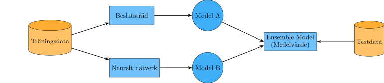
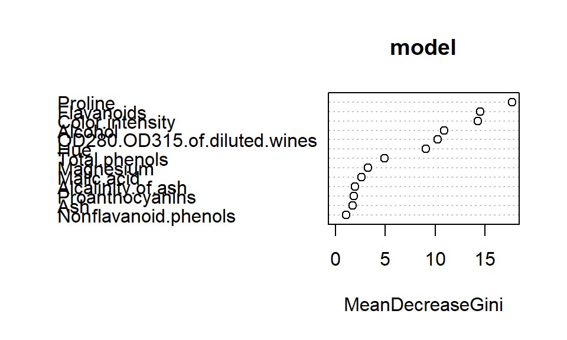
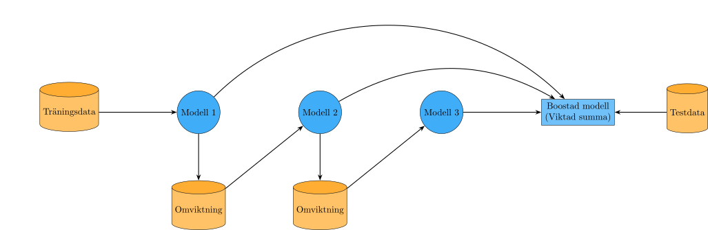
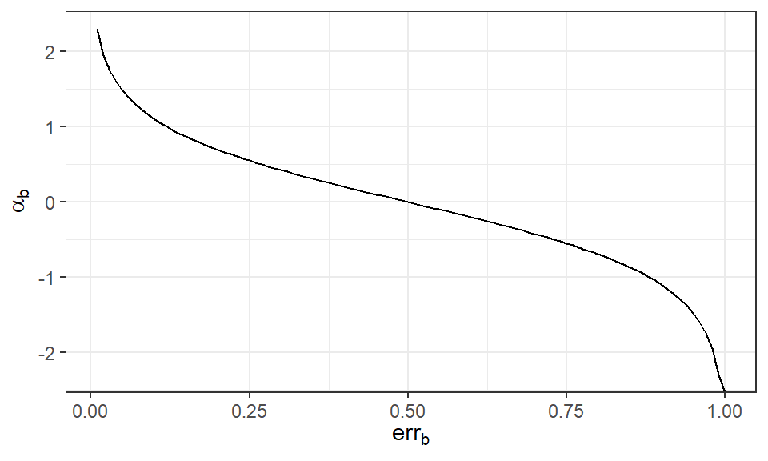
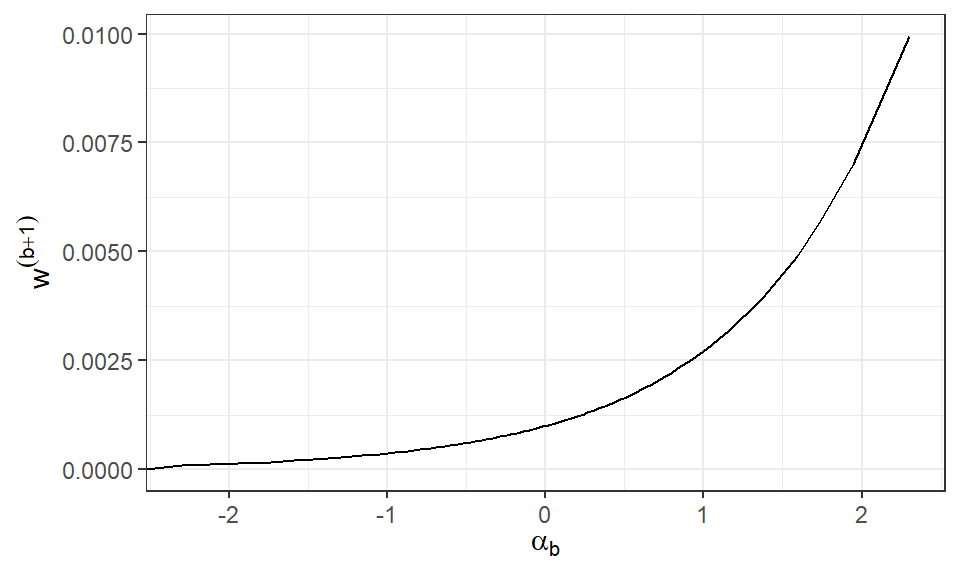

Istället för att förlita sig på en enstaka modell kan vi kombinera flera modeller i en ensemblemodell. Grundidén är att med hjälp av flera modeller kan respektive fokusera på olika egenskaper av data och när de kombineras blir prediktionerna bättre.
Det finns många olika varianter men de delas ofta upp i två olika metoder; fokusera på data eller på modeller. Vi kan med hjälp av bootstrapping eller bagging (bootstrap aggregating) göra slumpmässiga urval från träningsdata och skatta modeller på dessa olika urval. Vi kan också med hjälp av boosting vikta observationer i urvalen beroende på olika kriterier, exempelvis vikta upp de observationer som en modell inte lyckats prediktera rätt och vikta ner de observationer som en modell lyckats prediktera rätt.
Figur 30.1: Databaserad ensemble
Metoder som fokuserar på olika modeller innebär att träna flera olika modeller på samma data eller samma modell med olika hyperparametervärden som sedan kombineras.

Figur 30.2: Modellbaserad ensemble
30.1 Bootstrapping och Bagging
Bootstrapping är en klassisk teknik för att skapa nya datamaterial från ett begränsat insamlat data. Metoden går ut på att vi skapar \(B\) urval där observationer väljs med återläggning från träningsmängden som vi sedan använder för att skatta olika modeller eller funktioner. Metoden används inom frekventistisk statistik för att skapa skattningar av de sanna parametrarna och deras medelfel och samplingfördelning, men inom maskininlärning används den med ett annat syfte.
Bagging tar alla \(B\) bootstrapurval och tränar en modell på respektive urval \(\hat{f}_b\). Vi kan se det som att vi replikerar datainsamlingen \(B\) gånger och tränar en modell för varje replikat. Nu är inte bootstrapurval ett helt nytt datamaterial eftersom vi utgår från samma ursprungliga data men vi kan ändå få nytta av den ytterligare informationen. Den slutgiltiga modellen får vi genom att aggregera alla dessa modeller med exempelvis dess medelvärde vid regression. För klassificering kan vi använda majoritetsröstning för att bestämma den slutgiltiga prediktionen. \[
\begin{aligned}
\hat{f}_{bag}(\boldsymbol{X}) &= \frac{1}{B} \sum_{b=1}^B \hat{f}_b(\boldsymbol{X})\\
\hat{f}_{bag}(\boldsymbol{X}) &= argmax_j \sum_{b=1}^B I\left(\hat{f}_b(\boldsymbol{X}) = j\right)
\end{aligned}
\]
Om vi minns tillbaka till Figur 26.7 vet vi att en komplex modell ofta har en hög(re) varians som ökar felet. Bagging sänker variansen av den anpassade funktionen så att en mer komplex modell ändå blir generaliserbar men påverkas mycket av kvalitén av modellen som anpassas. Om modellen är bra blir aggregeringen bättre, men en dålig modell blir sämre när den aggregeras.
30.1.1 Prediktioner av vin
Säg att vi vill prediktera vilken typ av vin som vi har givet olika egenskaper. Vi börjar med att dela upp data och träna en enkel modell. Nu när vi gjort dessa steg manuellt tidigare kan vi använda en funktion som gör allting i ett och samma svep.
Från caret finns funktionen createDataPartition(). En fördel med denna funktion är att den kan genomföra uppdelningen på ett par olika sätt, bland annat att dragningarna görs inom varje nivå av responsvariabeln1 för att bibehålla klassbalansen i de olika mängderna. Vi tränar sedan en väldigt enkel modell, ett beslutsträd med mycket låg komplexitet.
# Först säkerställer vi att responsvariabeln är en faktorwine$Class <- wine$Class |>factor()set.seed(20260824)trainIndex <-createDataPartition( wine$Class,p =0.8,list =FALSE )# Plockar ut valda index till trainWinetrainWine <- wine[trainIndex,]# Tar bort valda index till testWinetestWine <- wine[-trainIndex,]wineTree <-rpart( Class ~ .,data = trainWine,method ="class",parms =list(split ="gini" ),control =list(minsplit =5,maxdepth =5,cp =0.1,xval =10,usesurrogate =0,maxcompete =0,maxsurrogate =0 ) )predictions <-predict(wineTree, newdata = testWine, type ="class")confusionMatrix(predictions, testWine$Class)
Confusion Matrix and Statistics
Reference
Prediction 1 2 3
1 10 2 0
2 1 10 2
3 0 2 7
Overall Statistics
Accuracy : 0.7941
95% CI : (0.621, 0.913)
No Information Rate : 0.4118
P-Value [Acc > NIR] : 0.000006217
Kappa : 0.6873
Mcnemar's Test P-Value : NA
Statistics by Class:
Class: 1 Class: 2 Class: 3
Sensitivity 0.9091 0.7143 0.7778
Specificity 0.9130 0.8500 0.9200
Pos Pred Value 0.8333 0.7692 0.7778
Neg Pred Value 0.9545 0.8095 0.9200
Prevalence 0.3235 0.4118 0.2647
Detection Rate 0.2941 0.2941 0.2059
Detection Prevalence 0.3529 0.3824 0.2647
Balanced Accuracy 0.9111 0.7821 0.8489
Med tre klasser har vi nu en annorlunda utskrift från confusionMatrix(). Vi får direkt utvärderingsmått uppdelat på klass, 1 2 och 3 och vi kan se den övergripande träffsäkerheten inte är dålig men inte heller jättebra, ca 79%. Vi kan nu försöka förbättra modellen genom att skapa bootstrapurval från träningsmängden och träna samma enkla modell på respektive urval.
Ett bootstrap urval kan skapas med funktionen createResample() från caret. Argumentet times styr hur många urval som skapas. Det resulterande objektet är en lista vilket innebär att vi kan effektivisera koden genom att använda lapply eller liknande funktion för att skatta samma modell på respektive urval.
bags <-createResample(y = trainWine$Class,# Skapar 20 bootstrapurvaltimes =20,list =TRUE )yhat <-lapply(X = bags,FUN =function(bootstrap) {# Plockar ut bootstrapurvalet från träningsdata sample <- trainWine[bootstrap, ]# Tränar den enkla modellen på bootstrapurvalet model <-rpart( Class ~ .,# Tränar modellen på bootstrapurvaletdata = sample,method ="class",parms =list(split ="gini" ),control =list(minsplit =5,maxdepth =5,cp =0.1,xval =10,usesurrogate =0,maxcompete =0,maxsurrogate =0 ) )# Genererar prediktioner från den tränade modellen.predict(model, newdata = testWine, type ="class") } )
Objektet yhat innehåller nu en lista med prediktioner över testmängden för alla 20 bootstrapurval. För att se hur bra modellen är överlag behöver vi använda majoritetsröstning för att vi ska få en prediktion per observation. Med hjälp av funktionen bind_rows() från tidyverse kan vi sammanställa alla 20 modellernas prediktioner för varje observation i testmängden, en rad för varje urval2.
argmaxPrediction <- yhat |>bind_rows() |># För varje kolumn, beräkna det mest förekommande värdetsummarize(across(everything(),~ .x |># Skapar en frekvenstabell över alla prediktionertable() |># Hittar vilket element som är det största frekvensenwhich.max() |># Plockar ut namnet (klassen) för det elementetnames() ) ) |># Roterar från rader till kolumner t() |>factor()confusionMatrix(argmaxPrediction, testWine$Class)
Confusion Matrix and Statistics
Reference
Prediction 1 2 3
1 10 1 0
2 1 13 0
3 0 0 9
Overall Statistics
Accuracy : 0.9412
95% CI : (0.8032, 0.9928)
No Information Rate : 0.4118
P-Value [Acc > NIR] : 0.00000000009446
Kappa : 0.9103
Mcnemar's Test P-Value : NA
Statistics by Class:
Class: 1 Class: 2 Class: 3
Sensitivity 0.9091 0.9286 1.0000
Specificity 0.9565 0.9500 1.0000
Pos Pred Value 0.9091 0.9286 1.0000
Neg Pred Value 0.9565 0.9500 1.0000
Prevalence 0.3235 0.4118 0.2647
Detection Rate 0.2941 0.3824 0.2647
Detection Prevalence 0.3235 0.4118 0.2647
Balanced Accuracy 0.9328 0.9393 1.0000
Med hjälp av 20 bootstrapurval och majoritetsröstning har vi nu lyckats få en träffsäkerhet på ungefär 94% och väldigt bra klasspecifika mått (över 90% sensitivitet för varje klass) på testmängden. Detta visar på styrkan i metoden, trots att vi har enkla modeller som var för sig inte är den bästa, kan de tillsammans bli en väldigt kraftfull sammanslagen modell.
CautionÖvning 1
Vid bagging skapas flera bootstrapurval från samma träningsmängd. Anta att träningsmängden innehåller observationerna A, B, C, D och E. Ett av bootstrapurvalen med storlek 5 blev A, A, C, E, E. Fyra regressionsmodeller tränas därefter på var sitt bootstrapurval. För en ny observation ger modellerna prediktionerna 4.2, 5.8, 6.1 och 7.9. Den aggregerade prediktionen beräknas som \(\hat{f}_{bag}(\boldsymbol{X})=\frac{1}{B}\sum_{b=1}^{B}\hat{f}_b(\boldsymbol{X})\). Vilka av följande påståenden är korrekta?
Sant. Bootstrap innebär urval med återläggning. Därför kan samma observation väljas flera gånger, samtidigt som andra observationer kan saknas i ett enskilt urval.
Falskt. Bootstrapurval görs med återläggning. Observationerna kan därför förekomma flera gånger i samma urval.
Sant. Den aggregerade prediktionen blir \((4.2+5.8+6.1+7.9)/4=6\).
Falskt. Bagging kan minska variationen mellan skattningar, men det innebär inte att en systematisk bias som delas av grundmodellerna automatiskt försvinner.
Sant. Enligt underlaget är baggings huvudsakliga effekt att minska variansen. Metoden beskrivs inte som en metod som i första hand minskar bias.
Falskt. Ett större \(B\) innebär att fler bootstrapurval och fler modeller skapas. Det förändrar inte automatiskt antalet unika observationer i varje enskilt urval.
30.2 Random Forest
Specifikt för trädmodeller kan bagging ge stora förbättringar i den slutgiltiga prestandan men det finns vissa problem. Bootstrapurvalen är korrelerade, varje urval ser nästan likadana ut vilket ofta leder till väldigt snarlika modeller. En konsekvens blir att den modellvarians som vi hoppas bli mindre, inte längre blir det när vi beräknar ett medelvärde över modellanpassningar som liknar varandra mycket.
Random Forest löser problemet med korrelerade modeller genom att slumpmässigt ändra modellerna som tränas. När vi tränar ett träd från ett bootstrapurval används endast en slumpmässig delmängd (\(q \le p\)) av de förklarande variablerna vid varje uppdelning. Storleken på \(q\) bestämmer vi själva men skaparen av Random Forest, Leo Breiman (Hastie m.fl. (2001)), föreslår följande tumregler:
Varje modell tränas både på ett urval av observationer (med återläggning) och ett urval av variabler vilket leder till ett minskat bias, “artificiell” varians i varje träd och mindre korrelation mellan träden. Ofta dominerar den avkorrelerade effekten vilket leder till att MSE minskar på testdata. Andra fördelar med Random Forest är att den är lätt att parallelisera samt att det urval av parametrar som görs minskar kostnaden för varje uppdelning.
Metoden har, utöver de vanliga hyperparametrar från ett enskilt beslutsträd, två ytterligare hyperparametrar i form av \(B\) och \(q\). Vi har i Avsnitt 30.1.1 introducerat \(B\) med enkel bagging som går att använda för andra sorters modeller, men Random Forest behöver också slumpa fram variabler för varje träd vilket inte kan implementeras på samma enkla sätt. Vi kan istället använda funktionen randomForest från paketet med samma namn.
Viktigt
Ett problem med randomForest() är att den är en gammal funktion som inte är riktigt kompatibelt med tidyverse. Specifikt har funktionen problem med variabelnamn som innehåller mellanslag. Vi måste först konvertera namnen till ett äldre format där mellanslag byts ut med någon annan symbol.
# Byter ut alla mellanslag med .names(trainWine) <-make.names(names(trainWine))names(testWine) <-make.names(names(testWine))model <-randomForest( Class ~ .,data = trainWine,# Anger testmängdenxtest = testWine |>select(!Class),ytest = testWine |>pull(Class) )model
Call:
randomForest(formula = Class ~ ., data = trainWine, xtest = select(testWine, !Class), ytest = pull(testWine, Class))
Type of random forest: classification
Number of trees: 500
No. of variables tried at each split: 3
OOB estimate of error rate: 0.69%
Confusion matrix:
1 2 3 class.error
1 48 0 0 0.00000000
2 0 56 1 0.01754386
3 0 0 39 0.00000000
Test set error rate: 2.94%
Confusion matrix:
1 2 3 class.error
1 11 0 0 0.00000000
2 1 13 0 0.07142857
3 0 0 9 0.00000000
Från utskriften ser vi dels vilka inställningar som använts i modellen; 500 träd har tränats baserat på olika bootstrapurval samt varje träd har endast använt 3 variabler från datamaterialets 13. Vi får också förväxlingsmatrisen för träningsmängden med ett valideringsfel, det som vi i Random Forest sammanhang kallar för out of bag (OOB) error, samt en förväxlingsmatris för testmängden med dess fel.
NoteraOOB
Detta fel beräknas på respektive träds icke-bootstrappade urval på samma sätt som vi i korsvalidering beräknar felet på den fold som inte använts i träningen. Det är dock där som skillnaderna mellan OOB och korsvalidering slutar, då korsvalidering har en tydlig struktur och använder endast varje observation en gång för validering medan OOB kan på grund av slumpen i bootstrapurvalet använda samma observation flera gånger till beräkningen av felet.
Vi kan se att testmängden för Random Forest-modellen endast fått en missklassificerad observation med en resulterande träffsäkerhet på \(1 - 0.0294 = 0.9706\). Modellen har producerat bättre resultat än den enkla bagging-modellen från Avsnitt 30.1.1.
För att få en indikation om vilka variabler som är viktiga för modellen att separera klasserna kan vi undersöka Variable Importance (ungefärlig sv. variablernas viktighet). Måttet Importance mäts utifrån hur mycket varje variabel bidrar med förklaring, det vill säga hur mycket gini minskar för en förgrening där variabeln inkluderas. För att sammanfatta alla de olika träden som skapas beräknas ett genomsnitt av alla förgreningar och viktiga variabler har höga genomsnittliga värden.
varImpPlot(model)

Figur 30.3: Variable importance (viktighet) för Random Forest modellen
Det verkar som att egenskaper som Proline och Flavanoids separerar klasserna bäst medan både färgintensiteten och mängden alcohol också är viktiga. Det är värt att notera detta diagram inte visar hur dessa variabler separerar klasserna, huruvida låga eller höga värden hör till en klass eller annan, utan för sådana slutsatser behöver vi titta närmare på träden i sig. Detta ligger utanför detta material.
CautionÖvning 2
Random Forest är en ensemblemetod som bygger vidare på bagging genom att kombinera ett stort antal beslutsträd. Vilka av följande påståenden om Random Forest är korrekta?
Sant. Varje träd tränas vanligtvis på ett eget bootstrapurval, vilket skapar variation mellan träden.
Sant. Vid regression används vanligtvis medelvärdet av trädens prediktioner. Vid klassificering kan den klass som får flest röster väljas.
Sant. Om träden inte alltid använder samma starka prediktorer kan deras prediktioner bli mindre korrelerade.
Falskt. Träden i Random Forest tränas oberoende av varandra. Att varje ny modell försöker korrigera tidigare fel är kännetecknande för boosting.
Falskt. Det slumpmässiga variabelurvalet är en central del av Random Forest och används för att göra träden mindre lika varandra.
Sant. Vid varje uppdelning får trädet endast välja mellan en slumpmässigt utvald delmängd av de förklarande variablerna.
30.3 Boosting
En enkel modell kan vanligtvis fånga upp vissa aspekter av data. Om vi försöker lära oss en stor mängd av enkla modeller som var och en lär sig en liten del av data kan vi sedan kombinera dessa “dåliga” modeller till en tillsammans stark modell. Boostingmetoden lär sig sekventiellt en ensemble av svaga modeller, till skillnad från den parallella baggingmetoden, genom att successivt vikta urvalet så att nästa modell får ett urval bestående av observationer som tidigare modeller inte lyckats anpassa bra.

Figur 30.4: Illustration av boosting
Första modellen som tränas har samma vikt på alla observationer, \(w_i^1 = \frac{1}{n}\quad i = \{1, 2, \dots, n\}\). Denna modell kommer vara överlag en svag prediktor men vi använder dess prestanda för att uppdatera vikterna för nästa träning. Felklassificerade observationer (eller observationer som har en större residual) får en högre vikt, och blir mer viktiga att optimera i nästa modellträning, medan korrekta prediktioner får en mindre vikt, vilket gör att nästa modell fokuserar på att prediktera de felaktiva observationerna korrekt. Denna process repeteras fram till att vi har \(B\) modeller med successivt ökande och minskande vikter beroende på resultaten från den föregående modellen. En observation som är svårklassificerad kommer få större och större vikt tills modellen tvingas att prediktera den rätt.
Viktigt
Inom boosting används en viktad kostnadsfunktion3. I Avsnitt 25.3.2 har vi antagit att varje observation bidrar lika mycket till den totala kostnaden. Vi kan omformulera Ekvation 25.3 till en viktad summa enligt: \[
\begin{aligned}
MSE = \Sum{n} w_i \cdot (y_i - \hat{y}_i)^2
\end{aligned}
\tag{30.1}\] där vi får det “vanliga” MSE om \(w_i = 1/n\).
Om vi vill lägga en större (eller mindre) vikt på vissa observationer, har vi nu en mer generell formel där vi kan göra detta.
Vi börjar med ett klassificeringsexempel där \(Y\) antar värdena -1 eller 1, kan vi beräkna en majoritetsröstning av \(B\) klassificerare som:
\[
\begin{aligned}
\hat{f}_{boost} (\boldsymbol{X})= sign\left(\sum_{b=1}^B \hat{f}_b(\boldsymbol{X})\right)
\end{aligned}
\] där \(sign(\cdot)\) identifierar om summan är positiv eller negativ och predikterar en klass som +1 eller -1 respektive. \(\hat{f}_b(\boldsymbol{X})\) är en modell tränad på ett boostat urval.
Men eftersom vi vill lägga olika vikt på de olika modellerna, lägger vi till en koefficient som ger en viktad majoritetsröstning: \[
\begin{aligned}
\hat{f}_{boost}(\boldsymbol{X}) = sign\left(\sum_{b = 1}^B \alpha_b \hat{f}_b(\boldsymbol{X})\right)
\end{aligned}
\] där \(\alpha_b\) är viktningskoefficienten för modell \(b\).
Flera olika algoritmer finns för att bestämma hur vikterna justeras och hur \(\alpha_b\) bestäms, den vanligaste är ADABOOST (Hastie m.fl. (2001)).
TipsADABOOST
Ge varje datapunkt en vikt \(w_i^1 = 1/n\).
För \(b = 1, \dots, B\)
Träna en “svag” klassificerare \(\hat{f}_b(\boldsymbol{X})\) på den viktade träningsdatan \(\{(\boldsymbol{x}_i, y_i, w_i^b\}_{i=1}^n\)
Uppdatera vikterna \(\{w_i^{b+1}\}_{i = 1}^n\) från \(\{w_i^{b}\}_{i = 1}^n\)
Kortfattat beräknar algoritmen hur mycket fel modell \(b\) gör, \(err_b\), genom att en viktad summa för de missklassificerade observationerna4 och använder sedan denna summa för att beräkna koefficienten \(\alpha_b\). En bra modell har ett lågt värde på \(err_b\) vilket leder till ett positivt värde på \(\alpha_b\) och en dålig modell får negativa värden.

Figur 30.5: \(\alpha_b\) för olika prestanda på modellerna
I viktuppdateringen, \(w_i^{b+1}\), kommer alla vikter där modellen gjort fel uppdateras med en faktor \(exp(\alpha_b)\), vilket vi kan visualisera för att få en bättre uppfattning.

Figur 30.6: \(w^{(b+1)}\) utifrån \(w^b = 1/1000\) med olika värden på \(\alpha_b\)
I Figur 30.6 ser vi hur vikterna för en missklassificerad observation med \(w_i^b = 1/1000\) förändras beroende på modellens prestanda. För en bra modell (positiv \(\alpha_b\)) kommer \(w_i^{b+1}\) bli mycket större eftersom den är en av få observationer som blivit fel, medan i en sämre modell (negativ \(\alpha_b\)) får många observationer istället en mindre ökning.
30.3.1 AdaBoost i R
Vi kan träna en AdaBoost modell genom att använda funktioner från caret paketet. Som ett tillägg behövs också paketet adabag. Vi har sedan tidigare i detta kapitel delat upp wine i en tränings och testmängd som vi kommer återanvända.
Notera
train() är anpassad för att genomföra hyperparameter tuning enligt Grid Search, men om vi är intresserade av att bara genomföra en form av boosting can vi använda funktionen boosting() direkt från adabag-paketet.
adaboostModel <-train( Class ~ ., data = trainWine,method ="AdaBoost.M1",trControl =# Applicerar 10-fold korsvalideringtrainControl(method ="cv",number =10 ),# Anger fixa hyperparametrar för grid searchtuneGrid =data.frame(mfinal =100,maxdepth =1, coeflearn ="Breiman" ) )adaboostModel
AdaBoost.M1
144 samples
13 predictor
3 classes: '1', '2', '3'
No pre-processing
Resampling: Cross-Validated (10 fold)
Summary of sample sizes: 130, 130, 129, 129, 130, 130, ...
Resampling results:
Accuracy Kappa
0.9719048 0.9577061
Tuning parameter 'mfinal' was held constant at a value of 100
Tuning
parameter 'maxdepth' was held constant at a value of 1
Tuning
parameter 'coeflearn' was held constant at a value of Breiman
I modellutskriften får vi information om hur träningen gått till och det slutgiltiga träningsfelet. Vi kan också få en väntevärdesriktigt skattning av felet på testmängden.
Confusion Matrix and Statistics
Reference
Prediction 1 2 3
1 10 1 0
2 1 13 0
3 0 0 9
Overall Statistics
Accuracy : 0.9412
95% CI : (0.8032, 0.9928)
No Information Rate : 0.4118
P-Value [Acc > NIR] : 0.00000000009446
Kappa : 0.9103
Mcnemar's Test P-Value : NA
Statistics by Class:
Class: 1 Class: 2 Class: 3
Sensitivity 0.9091 0.9286 1.0000
Specificity 0.9565 0.9500 1.0000
Pos Pred Value 0.9091 0.9286 1.0000
Neg Pred Value 0.9565 0.9500 1.0000
Prevalence 0.3235 0.4118 0.2647
Detection Rate 0.2941 0.3824 0.2647
Detection Prevalence 0.3235 0.4118 0.2647
Balanced Accuracy 0.9328 0.9393 1.0000
AdaBoost ger en modell med ungefär 94% träffsäkerhet och sensitiviteten ligger över 90% för alla klasser.
CautionÖvning 3
I maskininlärning kan boosting användas för att klassificera observationer genom att kombinera flera svaga modeller. Efter att den första modellen har tränats visar det sig att vissa observationer har klassificerats fel. Vilka av följande påståenden beskriver korrekt hur boosting fortsätter träningen och kombinerar de olika modellerna?
Sant. Felklassificerade observationer får vanligtvis högre vikt, så att nästa modell fokuserar mer på dem.
Sant. Korrekt klassificerade observationer kan få lägre vikt eftersom modellen redan hanterar dem relativt väl.
Falskt. Boosting är en sekventiell metod där resultaten från tidigare modeller påverkar träningen av nästa modell.
Sant. Modellernas prediktioner kan kombineras genom exempelvis en viktad majoritetsröstning.
30.3.2 XGBoost
Ytterligare en form av boosting är den populära algoritmen XGBoost (eng. eXtreme Gradient Boosting). Den är en form av Gradient Boosting som approximerar \(f(\boldsymbol{X})\) genom att minimera en differentiabel kostnadsfunktion. Istället för att vi förändrar vikterna i kostnadsfunktionen vid varje modell, kommer varje ny modell approximera den negativa gradienten av kostnaden från den föregående modellen.
\[
\begin{aligned}
\hat{f}_{b} (\boldsymbol{X})= \hat{f}_{b-1}(\boldsymbol{X}) +
v \cdot h_b(\boldsymbol{X})
\end{aligned}
\] där \(h_b(\boldsymbol{X})\) är en approximation av den negativa gradienten. Vi känner också igen \(v\) från gradient descent som inlärningshastigheten.
Gradient Boosting är teoretisk välgrundad då den bygger på just gradient descent och fungerar på olika kostnadsfunktioner. Varje iteration fokuserar på att minska felet mest effektivt. XGBoost gör algoritmen än mer effektiv med fokus på modellens prestanda och skalbarhet samtidigt som den hanterar saknade värden automatiskt. Med hjälp av inbyggd regularisering kan algoritmen kontrollera modellens komplexitet och minska risken för överanpassning där kostnadsfunktionen kombinerar storleken på felet och komplexiteten. XGBoost är optimerad för parallellisering och hantering av stora datamängder.
Algoritmen har ett flertal olika hyperparametrar som kan justeras vilket gör den både flexibel och träningstung avseende hyperparameter tuning.
eta – Inlärningshastighet. Lägger mindre vikt vid varje nytt träd.
nrounds – Antal boosting-rundor, dvs. antal träd som byggs.
lambda – L2-regularisering av vikter. Minskar överanpassning.
gamma – Minsta förbättring som krävs för att göra en split. Påverkar pruning.
max depth – Maximal djup för varje träd. Påverkar modellens komplexitet.
subsample – Andel av träningsdata som används för varje träd. Minskar överanpassning.
colsample bytree – Andel features som används vid varje träd. Ökar variation mellan träden
Valet av ensemblemetod kan ibland vara svårt att göra. Mycket beror på vad vi vill uppnå med metoden då deras syften och för-/nackdelar är lite olika.
Tabell 30.1: Fördelar med respektive metod.
Bagging
Boosting
Kan träna modeller parallellt
Tränar modeller sekventiellt
Använder bootstrappade dataset
Använder viktade dataset
Överanpassar inte med ökande \(B\)
Kan överanpassa när \(B\) ökar
Minskar variansen men inte bias
Minskar varians och bias
I detta kapitel har vi använt tre olika ensemblemetoder för att prediktera typen av vin. Vi såg att Random Forest hade den bästa prestandan på testmängden medan bagging och AdaBoost gav ungefär samma prestanda. AdaBoost var också den långsammaste av de tre modellerna på grund av den sekventiella träningsprocessen och gav ingen större förbättring i modellanpassningen i just detta fall. Vi gjorde dock inte någon Grid Search som skulle kunna förbättra modellen ytterligare, men ökat beräkningskomplexiteten markant då flera boostade modeller behövts tränas.
Viktigt
Glöm inte att om syftet är att strikt jämföra modeller bör vi göra det med en dedikerad valideringsmängd, inte att jämföra testmängder som det informellt görs i detta kapitel. Syftet med textens jämförelse är att visa effekten av de olika ensemblemetoderna, att en bättre modell kan fås genom att återsampla data och träna flera enkla modeller som tillsammans har en bättre prediktiv förmåga.
CautionÖvning 4
Två modellproblem ska hanteras med ensemblemetoder. * I problem A används en instabil modell vars prediktioner varierar mycket mellan olika träningsurval. Modellens systematiska bias bedöms däremot vara relativt liten. Modellerna behöver helst kunna tränas parallellt. * I problem B används enkla svaga modeller som var för sig underanpassar data. Det är möjligt att träna modellerna sekventiellt och låta senare modeller fokusera på tidigare fel. Vilka av följande påståenden är korrekta enligt jämförelsen mellan bagging och boosting i underlaget?
Falskt. Enligt jämförelsen i underlaget minskar bagging främst variansen och inte bias. En modell som underanpassar kan därför kräva en metod som också angriper bias.
Sant. Bagging tränar modeller på olika bootstrapurval och aggregerar deras resultat. Metoden används främst för att minska variansen, vilket är relevant för en instabil grundmodell.
Sant. Boosting tränar svaga modeller sekventiellt och låter senare modeller fokusera på de fel som tidigare modeller gjort. Detta kan minska både bias och varians.
Falskt. Baggingmodeller kan tränas oberoende och parallellt. Boosting är däremot sekventiell eftersom varje ny modell påverkas av resultaten från tidigare modeller.
Sant. Baggingprediktionen stabiliseras normalt när fler modeller aggregeras, medan boosting kan börja överanpassa när antalet modeller blir stort.
Falskt. Underlaget anger att boosting kan överanpassa när antalet modeller ökar, trots att de enskilda modellerna är svaga.
Referenser
Hastie, Trevor, Robert Tibshirani, och Jerome Friedman. 2001. The Elements of Statistical Learning. Springer Series in Statistics. Springer New York Inc.
För kontinuerliga responsvariabler görs uppdelningen baserat på percentiler↩︎
Varför vi lägger urvalen som rader är för att det är lättare att arbeta med kolumner.↩︎
Den används för många andra syften utöver boosting, framförallt när det finns ett intresse av att fokusera på vissa observationer i träningen.↩︎
\(I(y_i \ne \hat{f}_b(\boldsymbol{x}_i))\) blir 1 om observationen inte överensstämmer med prediktionen.↩︎